搭建虚拟机
利用VMware来搭建ubuntu的虚拟机，我将在这篇博客记录下载过程以及个人心得。同时，我会将他人详细教程视频放在文末，如有兴趣可自行观看。
一、下载VMware
先是到VMware的官网上下载软件，在安装完成后，点击许可证，输入密钥即可永久使用（自己找）。
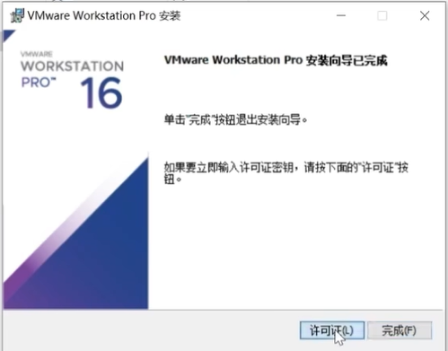
随后，出现如下情款说明激活成功。
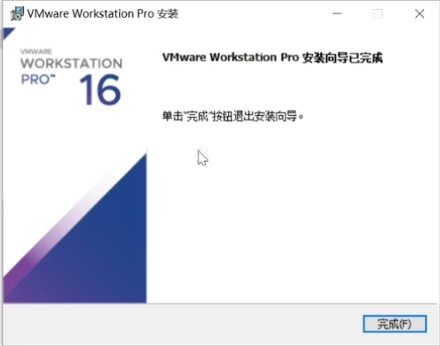
随后，下载ubuntu的光盘映像文件（我在文末附上的教学视屏有）。下载完后，准备阶段结束，进入下一阶段。
二、自定义设置
进入虚拟机页面，打开文件>>打开新建虚拟机向导，出现如下弹窗，选择第二个自定义选项
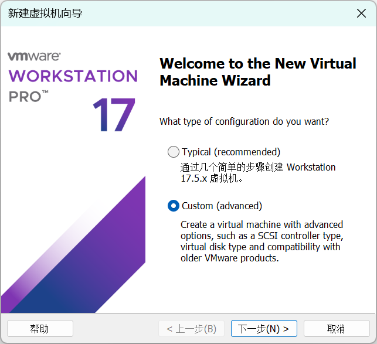
下一步中，选择第三个选项
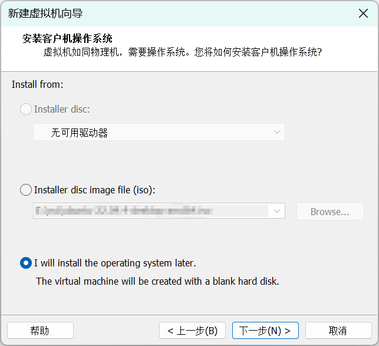
客户机操作系统选择Linux,Version选择ubuntu 64位。
随后依次自定义虚拟机各项属性，按照图片所示一一进行配置
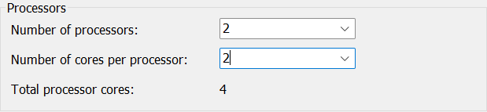
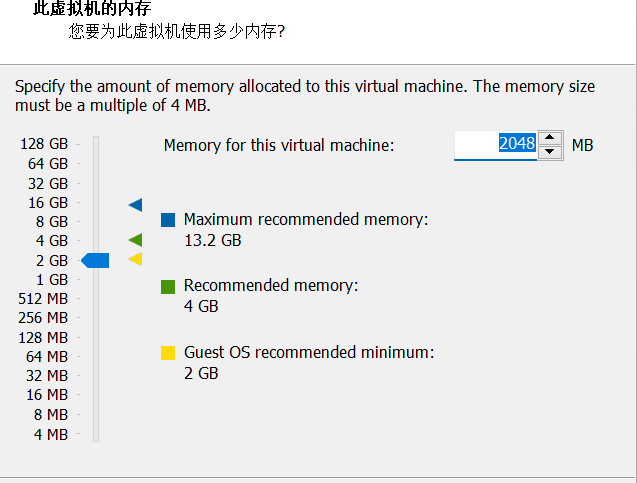
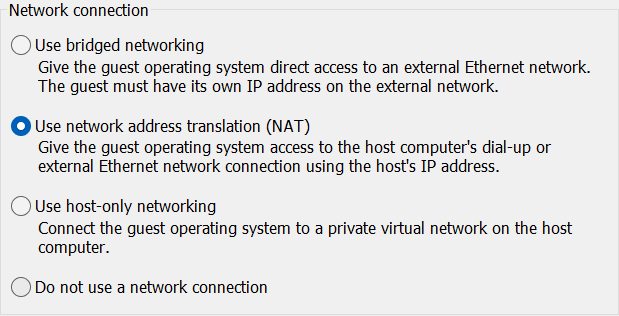
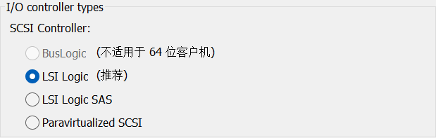
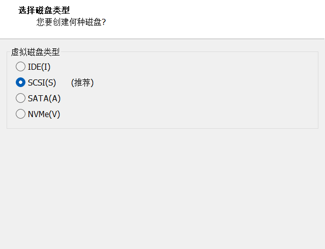
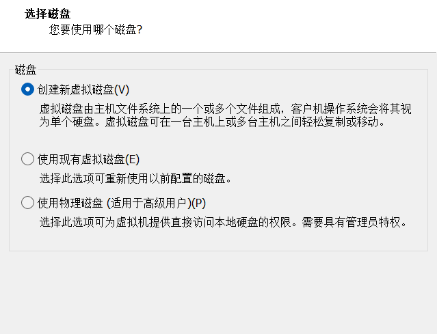
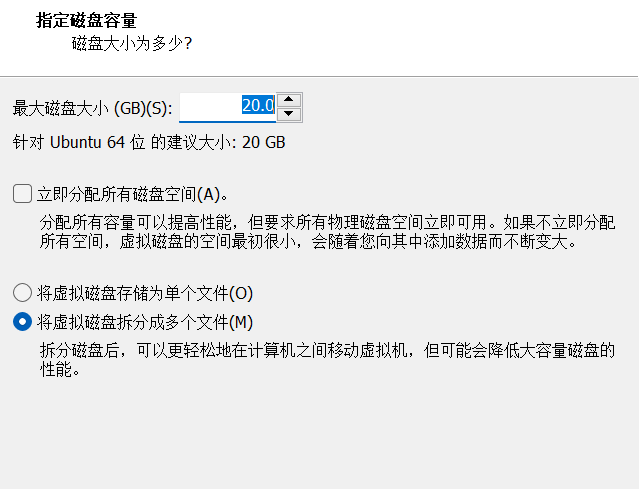
三、网络配置检查和虚拟机设置
在打开虚拟机之前，先检查以太网网络配置，先打开windows的系统，找到网络和internet，打开高级网络设置，找到相关设置下的>更多网络适配器设置。若出现如下弹窗显示已开启，则设置成功.
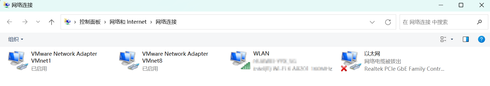
打开vm，找到左侧的设置，打开其中的CD/DVD(SATA),打开后在连接那一栏，选择第二个选项，将之前下载的ubuntu的光盘映像文件打开。
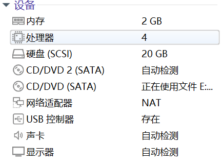
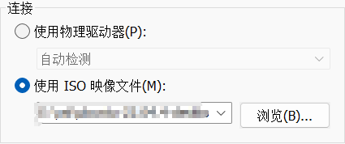
虚拟机启动后，进入ubuntu界面，开始设置一些基本内容，将语言选为中文后，选择安装ubuntu。
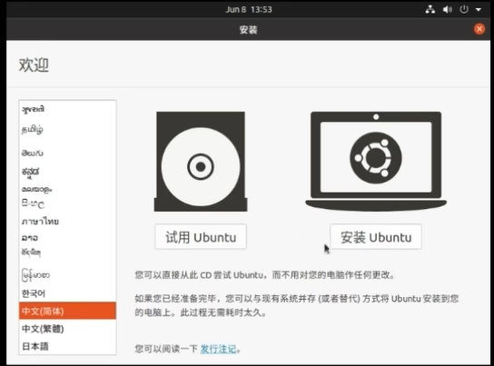
键盘语言选择Chinese，下一步，取消安装ubuntu时更新，选择现在安装后，时区选为上海
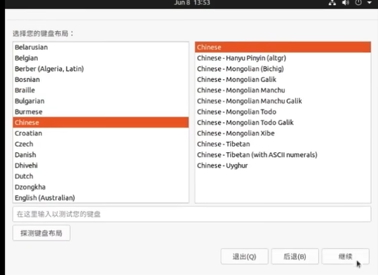
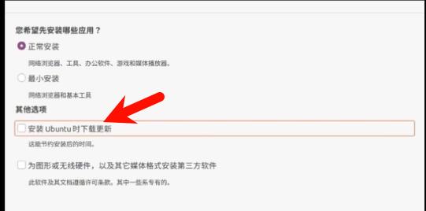
注册完账户，等待一段时间（10-20分钟，取决于电脑性能，最后ubuntu如下
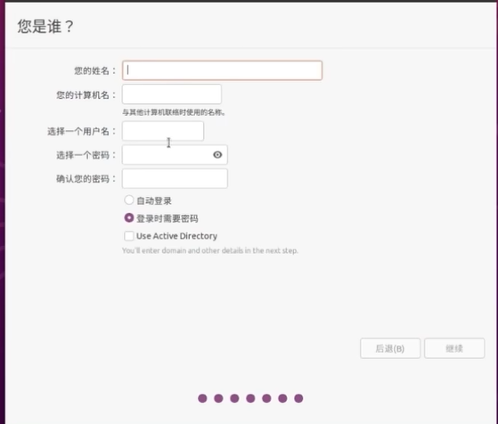
.jpg "截图1")
四、我遇见的报错
若隔天，vm出现如下情况，鼠标右键选择一管理员身份运行
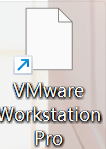
vm下载https://www.bilibili.com/video/BV1rd4y1G71H/?spm_id_from=333.337.search-card.all.click
ubuntu下载教程https://www.bilibili.com/video/BV1M94y1U7nc/?spm_id_from=333.337.search-card.all.click